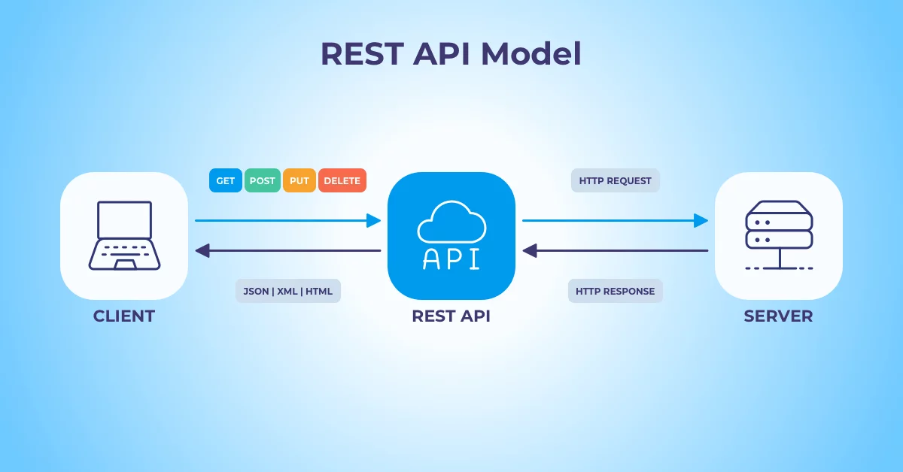

An API, or application programming interface, is a set of rules that define how applications or devices can connect to and communicate with each other. A REST API is an API that conforms to the design principles of the REST, or representational state transfer architectural style. For this reason, REST APIs are sometimes referred to RESTful APIs.
First defined in 2000 by computer scientist Dr. Roy Fielding in his doctoral dissertation, REST provides a relatively high level of flexibility and freedom for developers. This flexibility is just one reason why REST APIs have emerged as a common method for connecting components and applications in a microservices architecture.
